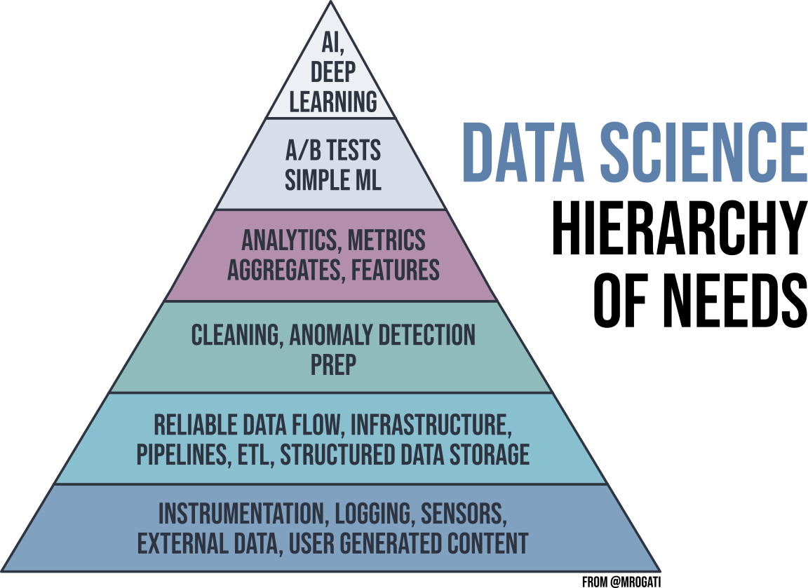
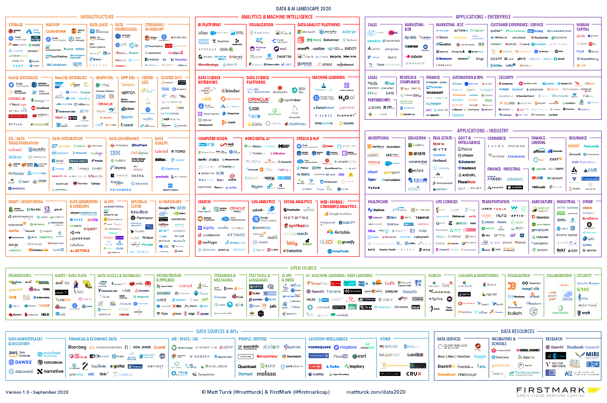
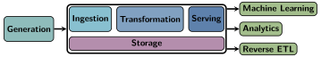

And So It Begins
Jed Rembold
January 15, 2025
Announcements
- Welcome to DATA 503: Fundamentals of Data Engineering!
- Things to do / be aware of:
- Access the course webpage here
- Also linked to from Canvas page
- Read over the full syllabus
- Procure the book if you haven’t already
- Join the class Discord channel, to facilitate remote questions,
answers, and general communication
- Invite link in announcement on Canvas
- Homework will be channeled through GitHub Classroom, so you’ll need to get a GitHub account if you don’t already have one
- Access the course webpage here
- First homework assignment is up!
Who Am I?
- Name:
- Jed Rembold
- Background:
- PhD in Physics with specialization in Astrophysics
-
- Astronomy is essentially a data science field these days
-
- Have been teaching CS/DS now for past 5 years
- Office:
- Ford 214
- Hours:
- MW 2:00-4:00, TTh 3:00-4:30, or anytime online or by appointment!
- Email:
- jjrembold@willamette.edu
Syllabus Stuff
Grade Breakdown
- The grade breakdown in the class is fairly straightforward
| Category | Weight |
|---|---|
| Homework | 55% |
| Project | 30% |
| Midterm Video | 15% |
Homework
- Homework due the night before class at midnight
- Will be submitted through GitHub Classroom
- Problems will commonly require a mix of written and coded pieces:
- Both will have either template files that you can add to and re-upload, or clear instructions as to what filename you should save your code or resulting data as.
- 72 cumulative, unpenalized hours allotted over the semester for late
submissions
- Late work past that point will drop by 20% credit each day
- Talk to me if something major comes up, and we can make a plan
Project
- I continue to grow the project in this course, and that trend will continue this semester
- Plan to incorporate:
- Data acquisition
- Data pipelines (ETL)
- Database modeling
- Data Serving
- Projects are linked to partners, though certain parts will be more or less independent
- At the end of the semester, you and your partner will take the culmination of your efforts and then make a presentation on it
Midterm Video
- I have done away with exams in this course
- Oral exams were most effective and great practice for technical interviews, but I can’t do them with 45 students
- Instead you will prepare a midterm video
- There will be a list of skills and techniques to showcase
- You choose a data set that will allow you to demonstrate those skills, and then prepare a video showcasing those skills and explaining what you are doing
- Videos should be 10-15 minutes.
- Happens in lieu of homework, so you have a week to work on it. Can practice as much as you want, split it across multiple takes, etc.
Expectations
- Most of you will not end up being data engineers
- Trying to teach you “enough to be dangerous”
- If you end up in a data scientist position, you will almost assuredly need to interface and work with your engineer
- If you end up in charge of data at a smaller enterprise, your responsibilities may well entail both the work of a data scientist and the work of a data engineer
- It is always useful in the modern era to understand how to store information
What even is Data Engineering?
Varied opinions!
Data engineering is a set of operations aimed at creating interfaces and mechanisms for the flow and access of information. It takes dedicated specialists—data engineers— to maintain data so that it remains available and usable by others. In short, data engineers set up and operate the organization’s data infrastructure, preparing it for further analysis by data analysts and scientists
“Data Engineering and Its Main Concepts” by AlexSoft
The first type of data engineering is SQL-focused. The work and primary storage of the data is in relational databases. All of the data processing is done with SQL or a SQL-based language. Sometimes, this data processing is done with an ETL tool. The second type of data engineering is Big Data–focused. The work and primary storage of the data is in Big Data technologies like Hadoop, Cassandra, and HBase. All of the data processing is done in Big Data frameworks like MapReduce, Spark, and Flink. While SQL is used, the primary processing is done with programming languages like Java, Scala, and Python.
“The Two Types of Data Engineering” Jesse Anderson
In relation to previously existing roles, the data engineering field could be thought of as a superset of business intelligence and data warehousing that brings more elements from software engineering. This discipline also integrates specialization around the operation of so-called “big data” distributed systems, along with concepts around the extended Hadoop ecosystem, stream processing, and in computation at scale.
“The Rise of the Data Engineer” Maxime Beauchemin
Data engineering is all about the movement, manipulation, and management of data.
“What is Data Engineering?” Lewis Gavin
Data engineering is the development, implementation, and maintenance of systems and processes that take in raw data and produce high-quality, consistent information that supports downstream use cases, such as analysis and machine learning.
“Fundamentals of Data Engineering” Joe Reiss & Matt Housley
The Data Engineer’s Role
- Data Engineers are responsible for ensuring that the right people
can find and access the data they need as efficiently as possible
- Who are the right people? Usually Data Scientists / Analysts
- Data Engineers are focused on the task of data collection, organization, and preparation
- The tasks of the Data Scientists are impossible without the Data Engineer!

The Five V’s
Data Engineers need to contend with multiple facets of data
- Volume:
- the quantity of data points
- Variety:
- the type and nature of the data (text, images, video, audio)
- Velocity:
- the speed at which new data is generated and processed
- Veracity:
- how trustworthy the sources are
- Value:
- how actionable the data is
The Data Software Landscape 2020

The Data Software Landscape 2024

Sampling the Landscape
- Clearly, I neither know all of those nor could teach them in a semester
- My goal for you in this class is three-fold:
- Understand the big picture
- Where do many of these pieces of software fit in a pipeline or day-to-day work?
- Understand what some options are in common use-case categories
- What is out there for databases?
- What is out there for data ingestion?
- Gain experience using a few representative pieces of software
- Understand the big picture
Alternative Storage Structures
| Structured | Semi-Structured | Unstructured | |
|---|---|---|---|
| Ability to search and organize data? | Easy | Moderate | Difficult |
| Format of Data? | Tables of numbers and some text | Tables, lists of numbers and text | Images, videos, detailed text |
| Where is it stored? | Relational databases | NoSQL, XML, JSON | Data Lakes |
Languages to Know?
- SQL
- The most common interface for databases and data lakes
- Python
- The bridge language between data engineering and data science
- JVM languages (Java or Scala)
- Prevalent for common open source Apache projects like Spark and Hive
- Bash
- The default text interface for Linux operating systems
The Data Engineering Lifecycle
- We are going to be largely concerned with the area between generation and final usage
- This three-step process is commonly given the name ETL, standing for Extract, Transform, Load

When to Organize
- There tend to be two different paradigms for when to run ETL operations
- Batch processing
- ETL operations are run on a particular interval, and all the most recent data is processed at once as a single “batch”
- Can take a while to run, depending on the size of the batch
- Stream processing
- ETL operations are run on the data as it is generated, in real-time
- Speed depends on how fast new data is being generated
Group Activity
- Use LinkedIn and perform a job search on “Data Engineer” jobs in a
US metro area of your choice. Identify 3 returned job listings per group
member to investigate in detail (so a group of 3 should look at 9 total
postings). Across your 3 listings, identify the following:
- Goals/objectives/purpose/responsibilities of the position
- Qualifications required / preferred
- Skills desired
- Spend 15 minutes on independent investigation and then
15 minutes on group synthesis
- Produce a concise group-wide bullet-point list summarizing a “competitive applicant” in the field of Data Engineering based on the above 3 dimensions
- We’ll summarize at the end what people found
Break
Dinner Break!
- Take 30 minutes to relax, grab a bite, and stretch your legs!
Why Relational Databases?
How to store data?
- There are many different ways information can be stored, with varying trade-offs!
- Suppose you wanted to keep track of your friend’s birthdays
| First Name | Last Name | Birthday |
|---|---|---|
| Frank | Stein | 4/2/2000 |
| Tessa | Loch | 8/23/2003 |
| Bobby | Wolf | 12/14/2005 |
Options!
As the previous slide may have suggested, you could store the information in some sort of table or comma separate values file:
| First Name | Last Name | Birthday |
|---|---|---|
| Frank | Stein | 4/2/2000 |
| Tessa | Loch | 8/23/2003 |
| Bobby | Wolf | 12/14/2005 |
First Name,Last Name,Birthday
Frank,Stein,4/2/2000
Tessa,Loch,8/23/2003
Bobby,Wolf,12/14/2005Alternatively, you might use some other form of common data structure like JSON to store the information:
[
{"First Name": "Frank",
"Last Name": "Stein",
"Birthday": "4/2/2000"},
{"First Name": "Tessa",
"Last Name": "Loch",
"Birthday": "8/23/2003"},
{"First Name": "Bobby",
"Last Name": "Wolf",
"Birthday": "12/14/2005"}
]
The Plot Thickens…
- Suppose now you’d also like to keep track of what courses they are currently taking, and what times those courses are held
- Suppose each is taking 2-3 classes, some of which overlap
- This significantly complicates both example storage methods!
Example Table Storage
- We can’t store tables inside of tables, so we usually need to duplicate information over multiple rows:
| First Name | Last Name | Birthday | Class | Class Day | Class Time |
|---|---|---|---|---|---|
| Frank | Stein | 4/2/2000 | CS151 | MWF | 1:00pm |
| Frank | Stein | 4/2/2000 | MATH256 | MWF | 9:00am |
| Tessa | Loch | 8/23/2003 | CS151 | MWF | 1:00pm |
| Tessa | Loch | 8/23/2003 | IDS236 | TTh | 1:00pm |
| Tessa | Loch | 8/23/2003 | HIST123 | MWF | 12:00pm |
| Bobby | Wolf | 12/14/2005 | IDS236 | TTh | 1:00pm |
| Bobby | Wolf | 12/14/2005 | MATH256 | MWF | 9:00am |
- Duplication is generally bad!
Example JSON Storage
- We still have duplication issues with JSON as well.
[
{"First Name": "Frank", "Last Name": "Stein", "Birthday": "4/2/2000",
"Classes": [
{"class": "CS151", "day": "MWF", "time":"1:00pm"},
{"class": "MATH256", "day": "MWF", "time":"9:00am"}
]},
{"First Name": "Tessa", "Last Name": "Loch", "Birthday": "8/23/2003",
"Classes": [
{"class": "CS151", "day": "MWF", "time":"1:00pm"},
{"class": "IDS236", "day": "TTh", "time":"1:00pm"},
{"class": "HIST123", "day": "MWF", "time":"12:00pm"}
]},
{"First Name": "Bobby", "Last Name": "Wolf", "Birthday": "12/14/2005",
"Classes": [
{"class": "IDS236", "day": "TTh", "time":"1:00pm"},
{"class": "MATH256", "day": "MWF", "time":"9:00am"}
]},
]
Relational Tables
- One solution to this issue is realizing that we are trying to actually keep track of two things: friends and classes.
- So we break things up into two tables, and then create relationships between them
- This is the core of what occurs in a relational database!
| First Name | Last Name | Birthday |
|---|---|---|
| Frank | Stein | 4/2/2000 |
| Tessa | Loch | 8/23/2003 |
| Bobby | Wolf | 12/14/2005 |
| Class | Day | Time |
|---|---|---|
| CS151 | MWF | 1:00pm |
| MATH256 | MWF | 9:00am |
| IDS236 | TTh | 1:00pm |
| HIST123 | MWF | 12:00pm |
| PHYS221 | MWF | 10:00pm |
Viewing Relational Databases
- In general, you’d probably use a third table to represent all the linkages
- Unique id keys are used to connect the different tables

Relational Databases and SQL
- SQL is a language that allows you to define and query relational databases
- These days it is pronounced “ESS-CUE-ELL”, though you may still hear it occasionally referred to in an older form of “SEQUEL”
- Does not technically stand for “Structured Query
Language”!
- Is not structured in a programming sense
- Does far more than just query
- Is not Turing complete in a language sense
- Comes in several variants, though the core standards are governed by
ANSI and ISO, so none stray too far from the standards
- We’ll be focusing on a variant called PostgreSQL this semester
SQL Basics
SQL Servers
- PostgreSQL (Postgres for short) operates on a server model, where
clients contact the server and ask it to manipulate or query a
particular database
- Multiple databases can exist on the server at a time
- Works well for large distributions, but you can also just run a local server on your computer, where you are the only client that can connect
- Several ways you can interact with the server once it is running
- From a terminal prompt (Ch 18)
- Using pgAdmin as detailed in the text
- Using an alternative database client like Beekeeper
Studio (Community Edition)
- This is my absolute favorite SQL client at the moment, and I’d highly recommend it. It is what I’ll showcase much of the semester
Adding a New Database
SQL has commands to help with the administration of the database, as well as creating, manipulating, and querying specific tables within the database
New installs will come with a database already existing (called
postgres), but it is a good idea to create a new one and leave the default untouched.Can run SQL commands either by opening the terminal or running the command in a query.
- The commands look the same regardless
To create a new database, the syntax is:
CREATE DATABASE |||name of database|||;
Adding a new Table
- Creating tables is one of the more fundamental actions you may need to take with a database
- Need to specify several things upon creation
- The name of the table
- The names of the columns and associated data types
CREATE TABLE |||table name||| (
|||column_name₁||| |||type₁|||,
|||column_name₂||| |||type₂|||,
etc...
);A Note on Syntax
- SQL in general requires no special formatting in the form of capitalization or tabbing
- Following some conventions can help make your commands easier to
read though:
- Use uppercase for SQL keywords
- Use lowercase and underscores for table or column names
- Indent clauses and blocks of code for ease of readability
- A semicolon does indicate the end of a command though
- Text and dates will need single quotes, numbers do not
Adding Values to a Table
- Your tables are initially empty!
- You add data to the table by inserting new values into the columns
- New rows are concatenated to the end of the table
- Need to include an entry for each column (rows can’t be unequal in length)
INSERT INTO |||table name||| (|||column₁|||, |||column₂|||)
VALUES ('row1a', 'row2a'),
('row1b', 'row2b'),
('row1c', 'row2c');Asking Questions
Query Time
The prime use of SQL for individuals not in charge of managing a database is using it to query the database for information
Queries return only a subset of information from the database, and don’t alter the database in any way
The keyword that begins any query is
SELECT, followed by:- The column name(s) you would like information from, and
- The table you want to get the information from
Basic syntax then could look something like:
SELECT |||column₁|||, |||column₂||| FROM |||table name|||;An asterisk
*, can stand in for the column names to stand for “all the columns”SELECT * FROM |||table name|||;
You are Distinct
- In many instances, a particular column may have duplicate entries
- Each row should be unique, but if looking at just a single column, there very well could be duplicates
- The
DISTINCTkeyword allows you to only display the unique values that appear in a column- Appears before the names of the desired columns
SELECT DISTINCT |||column||| FROM |||table name|||; - Can be applied to multiple columns at a time
- Then interpreted as “For each X in the table, what are all the Y values?”
SELECT DISTINCT |||column₁|||, |||column₂||| FROM |||table name|||;
Reversing Entropy
- Sometimes patterns can be more evident if some ordering is applied
to the query results
- The ordering only applies to the query, the original data is untouched
- If you do not specify an ordering, you have no guarantee about what order results will come out in!
- SQL provides the
ORDER BYkeyword to indicate a column to use for ordering - Can use
ASC(the default) orDESCto specify the direction of ordering - Can also order by multiple columns (separate by comma)
SELECT |||column₁|||, |||column₂|||
FROM |||table name|||
ORDER BY |||column₂||| DESC;Ordering Basics
- When your database was created, Postgres assigned it a
collation method based on your systems locale
- You can see the provided collation method for a connected database
using:
SHOW lc_collate;
- You can see the provided collation method for a connected database
using:
- This collation method is what determines what characters “come
before” other characters
- On my system, the collation method looks like:
en_US.utf8
- On my system, the collation method looks like:
- If your system is using a different collation method, then your
sorting might come out slightly different!
- In particular, be aware of this on MacOS
- You can choose a different collation method by providing one after
the
ORDER BYstatement
SELECT |||column||| FROM |||table name||| ORDER BY |||column||| DESC COLLATE C
Filtration
Especially in tables with thousands to millions of rows, you likely don’t want all of the information pertaining to a column
Instead it makes sense to filter or only return rows that meet certain criteria
SQL’s
WHEREkeyword provides exactly this functionality:SELECT |||column||| FROM |||table name||| WHERE |||some condition|||;Each condition is some sort of comparison check, which could be summarized as a true / false question
Comparison Operations
| Operator | Function | Example |
|---|---|---|
= |
Equal to | WHERE colname = 5 |
<> or
!= |
Not equal to | WHERE colname != 'fish' |
> |
Greater than | WHERE colname > 0 |
< |
Less than | WHERE colname < 100 |
>= |
Greater than or equal to | WHERE colname >= 0 |
<= |
Less than or equal to | WHERE colname <= 1000 |
BETWEEN |
Within a range | WHERE colname BETWEEN 50 and 100 |
IN |
Matches one of a set | WHERE colname IN ('red', 'blue') |
LIKE or
ILIKE |
Match a pattern | WHERE colname LIKE '%ed' |
NOT |
Negates a condition | WHERE colname NOT LIKE '%ed' |
Pattern Matching
LIKEandILIKEdiffer only in whether capitalization matters in the matchLIKEis capitalization sensitive,ILIKEis not
- Each can use several special characters in the desired pattern
%is a wildcard matching one or more of any character_is a wildcard matching just a single character- If you want to actually match off one of these characters, you need
to “escape” it with a backslash (
\_or\%)
Conditional Combinations
- Often, you might need to filter on several or more complicated conditions
- SQL also has the boolean
ANDandORoperators that you can use to stitch together multiple conditions - Order of operations is left to right, so surround terms in parentheses if you need them evaluated earlier
SELECT *
FROM |||table name|||
WHERE |||column₁||| LIKE 'F%' AND
(|||column₂||| > 50 OR |||column₃||| <= 10);Reaching Your Limit
- Often times, especially if sorting, you may not even be interested in all the results
- Maybe you just want the first few, or even just the first result
- You can control the maximum number of rows returned using
LIMIT - Comes last, after all the other keywords
SELECT * FROM |||table_name|||
WHERE |||some_condition|||
ORDER BY |||some_column|||
LIMIT 5;Example
Introduce yourself to a neighbor and then work together to construct a query to solve the following situation:
- Suppose you are particularly short and thus can only access cereals on the first two shelves. You’d like to grab the cereal with “Cheerios” somewhere in its name that has the highest amount of sugar per serving. Construct a query that could help you figure out what cereal you should be grabbing!